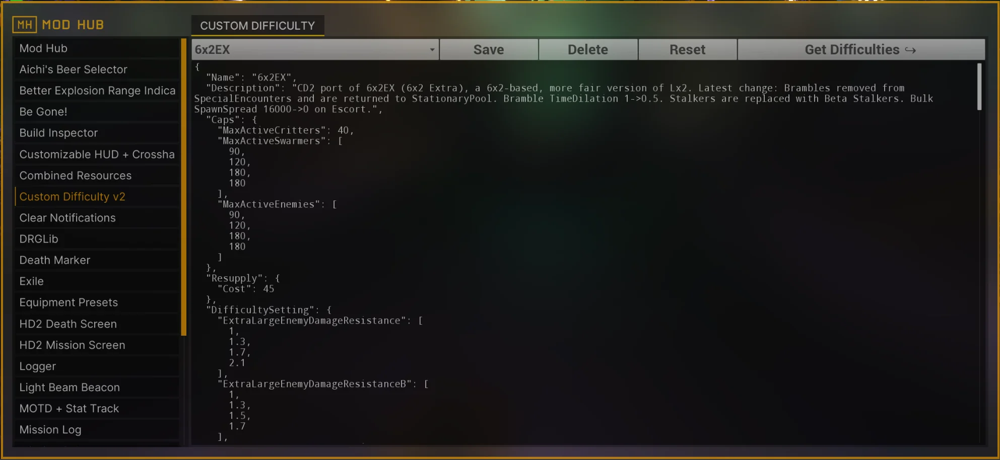

CD2 参考文档
本文档是《深岩银河》模组 Custom Difficulty 2（CD2） 的参考指南，它允许你创建新的难度。CD2 由@TheBrain 开发，作为 Custom Difficulty（CD1）的迭代版本，相比 CD1 拥有更高的灵活性和更多的可能
英文原文
This document serves as a reference for Custom Difficulty 2, a mod for Deep Rock Galactic which allows the creation of new hazards, or difficulties. Developed by @TheBrain as a successor to the Custom Difficulty mod, CD2 features many improvements over the flexibility and possibilities offered to difficulty designers:
- 通过引入类似编程语言结构的 Mutators，让代码作者可以更精细地控制游戏逻辑。
英文原文
Allows players to a have a much finer control over many aspects of the gameplay by introducing mutators, control flow structures similar to those found in common programming languages. - 开放大量敌人控制项，可自由修改它们的行为、生成机制及材质。
英文原文
Exposes many enemy controls to change their behaviour, spawning mechanics and even aspect by featuring custom materials replication to clients. - 支持在任务中，根据游戏条件实时调整敌人池。
英文原文
Allows manipulating the enemy pools live during a mission based on gameplay conditions. - 新增多项 CD1 不具备的功能，比如光照控制、玩家体型缩放、地图硝石数量调节等等
英文原文
Offers many features not available in CD1 such as controls for illumination, player scale, the amount of nitra in the map, etc. - 以及更多内容。
英文原文
... and many others.

Modhub 中的 CD2 主界面
更新日志 · Update Log
- 2024-12-04,CD2-v9:新增
ByEscortPhase和ByRefineryPhaseMutator。英文原文
4-Dec-2024: Updated for CD2-v9: addedByEscortPhaseandByRefineryPhasemutators. - 2024-12-25,CD2-v10:新增 Projectiles页面、MEV、DEA 页面，补充精英敌人与变种设置的说明，新增
Spawner模块的介绍，并进行了一些小修正。英文原文
25-Dec-2024: Updated for CD2-v10: added the Projectiles page, added the MEV and DEA page, added an explanation for elite and veteran enemies in Enemies, added the explanation for the newSpawnerenemy control, and some minor corrections. - 2025-1-29，CD2-v11:新增
Direct和UsesBiomeVariants的敌人控制项，以及BySaboPhase的Mutator英文原文
29-Jan-2025: Updated for CD2-v11: added theDirectandUsesBiomeVariantsenemy controls and theBySaboPhasemutator. - 2025-2-20,CD2-v12:新增
DefenseProgress和ByResuppliesCalled的 Mutator;新增Salvage模块和BySalvagePhase的 Mutator英文原文
20-Feb-2025: Partial update for CD2-v12: added theDefenseProgressandByResuppliesCalledmutators, added theSalvagemodule and theBySalvagePhasemutator. - 2025-2-28:在 Resources 与 Projectiles 页面中加入 @Carrot 提供的发射物汇总；在 Resources 与 FAQ 中加入 @Spy 编写的 CD2 公开房间可使用的功能指南；在 Projectiles 与 MEV、DEA 和 EEE 页面加入 EEE 的参考资料
英文原文
28-Feb-2025: Added @Carrot's projectile resource to the Resources and Projectiles tabs, added @Spy's guide to pubbing with CD2 to Resources and to the FAQ, added EEE's reference to Projectiles and to MEV, DEA and EEE. - 2025-3-11,CD2-v13:在敌人控制中加入 legacy pawn 属性；新增
BySecondary与DwarfCount的 Mutator;补充Darkness模块的介绍；在Salvage模块新增Salvage.Minimules.NitraToGive字段。英文原文
11-Mar-2025: Update for CD2-v13: added the legacy pawn stats to enemy controls, addedBySecondaryandDwarfCountmutators, addedDarknessmodule descriptions, addedSalvage.Minimules.NitraToGiveto theSalvagemodule - 2025-3-22,CD2-v14:为
ByBiome的 Mutator 加入Dense Biozone选项；补充由 @emctwo 提供的Movement敌人模块描述。英文原文
22-Mar-2025: Update for CD2-v14: added theDense Biozoneoption to theByBiomemutator, added descriptions toMovementenemy module provided by @emctwo. - 2025-5-25,CD2-v15:为 Wavespawner 中加入
Diversity选项；在 Mutators 章节新增Trigger系列 Mutators;在敌人控制项中新增Heal（HealRaw等）控制与Outline控制。英文原文
25-May-2025: Update for CD2-v15: added theDiversityoption to the wavespawner section, added the newTriggermutators to the mutators section, added theHealadvanced controls and the newOutlinecontrol to enemies. - 2025-6-2:在 Enemies 页面中澄清
Enemies与EnemiesNoSync的差别；在 MEV、DEA 和 EEE 页面移除 DEA 敌人列表，改为添加 mod.io 页面与官方列表的链接。英文原文
2-Jun-2025: Clarified the section about the differences betweenEnemiesandEnemiesNoSyncin Enemies; removed the DEA enemy list from MEV, DEA and EEE and added a link to the mod in mod.io and to the official list. - 2025-7-23:新增 Direct 页面
英文原文
23-Jul-2025: Added the Direct page. - 2025-8-15:在 Modules 的
Salvage部分新增Usable表格及使用示例英文原文
15-Aug-2025: Added theUsabletable in theSalvagemodule in Modules and some examples. - 2025-11-11,CD2-v16:新增
Countdown、EnemiesRecentlySpawned、Int2String、Float2String与Join的 Mutator;新增Messages与SoundCues模块；在Dwarves模块新增FallDamageStartVelocity与FallDamageModifier的参数。英文原文
11-Nov-2025: Update for CD2-v16: added theCountdown,EnemiesRecentlySpawned,Int2String,Float2Stringand theJoinmutators; added theMessagesandSoundCuesmodule; added theFallDamageStartVelocityandFallDamageModifierin theDwarvesmodule. - 2025-12-2,CD2-v17:新增
Vars模块，在 Wavespawners 中加入Alert字段；并新增以下Mutators:DroppodDistance、MuleDroppodDistance、Nonzero、Select、EnemyHealth、EnemyDistance、SecondaryFinished、LockFloat、LockBoolean、LockString。英文原文
2-Dec-2025: Update for CD2-v17: added theVarsmodule, theAlertfield on wavespawners, theDroppodDistance,MuleDroppodDistance,Nonzero,Select,EnemyHealth,EnemyDistance,SecondaryFinished,LockFloat,LockBooleanandLockStringmutators. - 2025-12-11:新增 Common Edits 章节,并将参考文档主题样式更改为 Material 风格【翻译版未更改】
英文原文
11-Dec-2025: Added the Common Edits section, changed theme to material. - 2026-2-8:新增以下 Mutators:
Sequence、StopWatch、TriggerTimer、SelectFromArray;Enemies部分添加DropResource、Goomba功能英文原文
8-Mar-2026: Update for CD2-v18: added theStopWatch,TriggerTimer,SequenceandSelectFromArraymutators, added theGoombaandDropResourceenemy controls to Enemies.